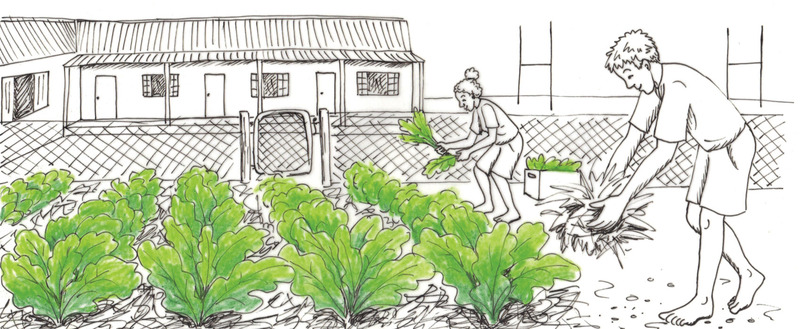

<div class="container">
  <div id="contents" class="col-md-12 main-content"><h1 xmlns="http://www.w3.org/1999/xhtml" id="toc-id-4">Prosessering van voedsel vir noodtoestande</h1>
    
    
    <p xmlns="http://www.w3.org/1999/xhtml" class="x--Body-opener"><span>In die vorige hoofstuk het jy oor vlugtelinge geleer en ook geleer waarom groot groepe mense
gedwing kan word om hulle huise en lande te verlaat. Gewoonlik het vlugtelinge min of geen
besittings nie. Hulle kan ook nie genoeg voedsel vir lang periodes saam met hulle dra nie. In hierdie
hoofstuk gaan jy leer hoe om voedsel te prosesseer vir noodtoestande. Geprosesseerde voedsel
hou baie langer as vars voedsel en is ideaal vir vlugtelingekampe. Jy gaan ’n ontwerpopdrag skryf
en ’n noodtoestandmaaltyd beplan wat voedsaam en smaaklik is. Dit moet moontlik wees om hierdie
noodtoestandmaaltyd in ’n vlugtelingekamp te kan maak.
</span></p>

     
<figure xmlns="http://www.w3.org/1999/xhtml">
    <p class="x--caption"><span></span>
    </p>
    <figcaption><p>Figuur 1:
    <span> Vlugtelingekamp in Darfoer, Sudan, in Noord Afrika.
</span></p></figcaption></figure>
<figure xmlns="http://www.w3.org/1999/xhtml">
    <p class="x--caption"><span></span>
    </p>
    <figcaption><p class="x--caption">Figuur 2</p></figcaption></figure>
    <figure xmlns="http://www.w3.org/1999/xhtml">
    <p class="x--caption"><span></span>
    </p>
    <figcaption><p class="x--caption">Figuur 3</p></figcaption></figure>

    <h2 xmlns="http://www.w3.org/1999/xhtml" id="toc-id-5">Ondersoek tipes voedsel</h2>

    <p xmlns="http://www.w3.org/1999/xhtml" class="x--Body-Text"><span>Wanneer vlugtelinge na ’n gasheerland reis, versorg die mense in die gasheerland
normaalweg die vlugtelinge.
</span></p>

    <p xmlns="http://www.w3.org/1999/xhtml" class="x--Body-indent">In die vorige hoofstuk het jy geleer oor die groepering van mense en hoe hierdie
groepering kan verander, afhangende of die noodtoestand deur ’n natuurramp of
oorlog veroorsaak is.</p>

    <p xmlns="http://www.w3.org/1999/xhtml" class="x--Body-indent">Die tipe voedsel wat vlugtelinge eet, hang af van die groepering van mense in
die groep. Kinders benodig meer proteïne as ouer mense, babas benodig spesiale
melkformules, en bejaardes benodig baie groente om hulle teen siektes te
beskerm.</p>

    <p xmlns="http://www.w3.org/1999/xhtml" class="x--Body-indent">As huiswerk moes jy nagedink het oor die tipes voedsel wat beskikbaar is in
Suid-Afrika en ook aan voedsel wat ’n groot aantal mense kan voed. Die voedsel
moet goedkoop, maklik om te vind en voedsaam wees</p>

    <p xmlns="http://www.w3.org/1999/xhtml" class="x--Body-indent"><span>Vlugtelinge verwag nie om duur voedsel te kry nie; hulle soek net genoeg en
gesonde voedsel. Slegte voeding kan probleme soos siektes veroorsaak. Indien
vlugtelinge swak of siek raak, kan hulle nie meer hulself versorg nie en die situasie
in die vlugtelingekamp kan vererger.
</span></p>

    <p xmlns="http://www.w3.org/1999/xhtml"><b>Voedsame voedsel
</b></p>

    <p xmlns="http://www.w3.org/1999/xhtml" class="x--Body-indent">Om gesond te bly, benodig die liggaam verskillende tipes voedsel wat bekend
staan as voedselgroepe. Maaltye wat die regte kombinasie van verskillende
voedselgroepe bevat, word gebalanseerde maaltye genoem. ’n Gebalanseerde
maaltyd bestaan uit die volgende voedselgroepe:</p>

    <ul xmlns="http://www.w3.org/1999/xhtml"><li class="x--Body-text-bullet"> 
      Koolhidrate: verskaf energie en word gevind in styselvoedsel soos aartappels,
mieliemeel, rys en brood.
</li>

      <li class="x--Body-text-bullet">
      Proteïne: bou spiere en gee aan ons krag. Proteïenryke voedsel sluit in vleis,
hoender, vis, eiers, bone, kaas en melk.
</li>

      <li class="x--Body-text-bullet"> Vette en olies: verskaf energie en help om ons interne organe te beskerm. Hulle
help ook die liggaam om siektes te beveg. Voedsel in hierdie groep sluit in kaas,
botter, margarien, en olies soos sonneblomolie en canola olie
</li>

      <li class="x--Body-text-bullet"> 
      Vitamines en minerale: word gevind in alle voedsel, maar veral in vars vrugte
en groente. Hulle is baie belangrik vir goeie gesondheid, sterk bene en tande,
en help jou brein om goed te funksioneer. Vitamines help ook om siektes te
voorkom. Byvoorbeeld, Vitamien C word gevind in lemoene en suurlemoene en
beveg verkoues en griep.
</li>
    </ul><p xmlns="http://www.w3.org/1999/xhtml"><b>Gebalanseerde diëte
</b></p>

    <p xmlns="http://www.w3.org/1999/xhtml" class="x--Body-indent">Kyk na die tekening hieronder en identifiseer watter voedsel hoog is in
koolhidrate, proteïne, vette en olies, en vitamines en minerale. Jy sal oplet dat
soortgelyke voedsel saamgegroepeer is. Let ook op dat die groepe van dieselfde
grootte of “proporsie” is. Die tekening wys dat ons soortgelyke proporsies van
voedsel, van al vyf voedselgroepe, op ’n daaglikse basis moet eet, om gesond te bly.</p>

    <p xmlns="http://www.w3.org/1999/xhtml" class="x--Body-indent">Jy kan aan voedsaamheid dink as ’n wiel waar elke tipe voedsel ’n belangrike
deel is.</p>
<figure xmlns="http://www.w3.org/1999/xhtml">
    <p class="x--Body-opener"><span></span> </p>
<figcaption>
    <p class="x--caption">Figuur 4: ’n Gebalanseerde dieet bestaan uit voedsel van al vyf voedselgroepe per dag.</p></figcaption></figure>

    <p xmlns="http://www.w3.org/1999/xhtml" class="x--Body-indent">Onthou ook dat jou liggaam vars, skoon water nodig het om aan te hou werk en
om die voedsel wat jy eet te verteer en te absorbeer.</p>
<figure xmlns="http://www.w3.org/1999/xhtml">
    <p class="No-Paragraph-Style" xml:lang="en-GB">
    <span><span></span></span></p>
<figcaption>
    <p class="x--caption para-style-override-8">Figuur 5: Die drink van vars, skoon water is baie belangrik vir jou gesondheid.</p>
</figcaption></figure>
    <p xmlns="http://www.w3.org/1999/xhtml" class="x--Body-indent">As huiswerk in die vorige hoofstuk, is jy gevra om na te dink oor voedsel wat
goedkoop en maklik is om te vind, en wat ook voedsaam is en maklik is om voor te
berei.</p>

    <ul xmlns="http://www.w3.org/1999/xhtml"><li class="x--Body-text-bullet">  Werk in pare en vergelyk jul huiswerk notas.
</li>

      <li class="x--Body-text-bullet"> 
      Verduidelik die redes vir julle keuses aan mekaar. Die hoofgedagtes om in ag te
neem is die koste van die voedsel, hoe maklik dit is om in die hande te kry, en
hoe voedsaam dit is.
</li>

      <li class="x--Body-text-bullet">   Maak ’n gesamentlike besluit oor wat julle aan die vlugtelinge gaan gee om te
eet. Indien albei van julle goeie planne het, kan julle ’n kombinasie van julle
disse voorstel.
</li>
    </ul><figure xmlns="http://www.w3.org/1999/xhtml"><p class="Normal"><span></span> </p>
<figcaption>
    <p class="x--caption">Figuur 6: Piesangs is baie voedsaam en goedkoop en is ook volop in die somer.</p>
</figcaption></figure><figure xmlns="http://www.w3.org/1999/xhtml">
    <p class="T-6point"><span></span> </p>
<figcaption>
    <p class="x--caption">Figuur 7: Lemoene het baie Vitamine C om verkoues en griep te voorkom. Hulle is goedkoop en volop in
die winter.</p>
</figcaption></figure><figure xmlns="http://www.w3.org/1999/xhtml">
    <p class="x--Body-opener para-style-override-9">
    <span></span> </p>
<figcaption>
    <p class="x--caption para-style-override-10">Figuur 8: Koring is baie voedsaam.</p>
</figcaption></figure><figure xmlns="http://www.w3.org/1999/xhtml">
    <p class="Normal para-style-override-11"><span></span> </p>
<figcaption>
    <p class="x--caption">Figuur 9: Spinasie groei vinnig en is hoog in vitamines en minerale.</p>
</figcaption></figure>
    <h3 xmlns="http://www.w3.org/1999/xhtml">Vrae oor jou ondersoek</h3>

    <p xmlns="http://www.w3.org/1999/xhtml" class="x--Body-investigation-hanging">1. Watter tipe voedsel het jy gekies? Skryf ook neer hoekom jy dit gekies het.</p>

    
    <hr xmlns="http://www.w3.org/1999/xhtml"/><p xmlns="http://www.w3.org/1999/xhtml" class="x--Body-investigation-hanging">2. Het jy die verskillende ouderdomsgroepe wat in die kamp mag wees in ag
geneem? Indien jy verskillende voedsel vir verskillende ouderdomsgroepe
gekies het, verduidelik waarom jy dit gedoen het.</p>

    
    <hr xmlns="http://www.w3.org/1999/xhtml"/><p xmlns="http://www.w3.org/1999/xhtml" class="x--Body-investigation-hanging">3. Is daar genoeg van hierdie voedsel beskikbaar om ’n groot groep mense te
voed? Skryf neer hoekom dit maklik sal wees om genoeg van hierdie voedsel vir
die kamp te kan kry.</p>

     
    <hr xmlns="http://www.w3.org/1999/xhtml"/><p xmlns="http://www.w3.org/1999/xhtml" class="x--Body-investigation-hanging">4. Is die voedsel voedsaam? Skryf neer hoekom jy dink die voedsel wat jy gekies
het die vlugtelinge gesond sal hou.</p>

     
    <hr xmlns="http://www.w3.org/1999/xhtml"/><p xmlns="http://www.w3.org/1999/xhtml" class="x--Body-investigation-hanging">5. Is dit maklik om voor te berei? Skryf neer die redes vir jou antwoord.</p>

    
    <hr xmlns="http://www.w3.org/1999/xhtml"/> 
    <h2 xmlns="http://www.w3.org/1999/xhtml" id="toc-id-6">Ondersoek jou vlugtelingekamp</h2>

    <p xmlns="http://www.w3.org/1999/xhtml" class="x--Body-Text"><span>’n Groep van 100 vlugtelinge het hulle naby jou gemeenskap gevestig. Jy is gevra
om kos aan hulle te voorsien. Voordat jy jou planne optrek, moet die hele klas
besluite neem oor die kwessies hieronder.
</span></p>

    <ul xmlns="http://www.w3.org/1999/xhtml"><li class="x--Body-text-bullet">  Wat is die groepering van mense? Verdeel hulle in vier kategorieë: babas,
kinders, volwassenes, en bejaardes. Vul die tabel hieronder in om jou met jou
volgende taak te help.
</li>
    </ul><p xmlns="http://www.w3.org/1999/xhtml" class="x--Body-text-bullet para-style-override-12">
    <span class="char-style-override-3"><b>Die aantal mense van verskillende ouderdomme in jou groep van 100 vlugtelinge
</b></span></p>

 
         

        <table xmlns="http://www.w3.org/1999/xhtml" id="table-2" class="No-Table-Style"><tbody><tr class="Row-Column-20"><td class="cell-style-override-3">
                <p class="x--Body-Text para-style-override-13"><b>Ouderdomsgroep
</b></p>
              </td>

              <td class="cell-style-override-3">
                <p class="x--Body-Text para-style-override-13">
                <b>Aantal mense in hierdie ouderdomsgroep
</b></p>
              </td>
            </tr><tr class="Row-Column-20"><td class="cell-style-override-3">
                <p class="x--Body-Text">Babas (1–5 jaar oud)</p>
              </td>

              <td class="cell-style-override-3">
                 
              </td>
            </tr><tr class="Row-Column-20"><td class="cell-style-override-3">
                <p class="x--Body-Text">Kinders (6–15 jaar oud)</p>
              </td>

              <td class="cell-style-override-3">
                
              </td>
            </tr><tr class="Row-Column-20"><td class="cell-style-override-3">
                <p class="x--Body-Text">Volwassenes (15–65 jaar oud)</p>
              </td>

              <td class="cell-style-override-3">
               
              </td>
            </tr><tr class="Row-Column-20"><td class="cell-style-override-3">
                <p class="x--Body-Text">Bejaardes (ouer as 65 jaar)</p>
              </td>

              <td class="cell-style-override-3">
                 
              </td>
            </tr></tbody></table> 
   <ul xmlns="http://www.w3.org/1999/xhtml"> 
      <li class="x--Body-text-bullet">  <span>Jou groep het geen kos saam met hulle gebring nie. Besluit waar jy voedsel gaan
vind om die mense te voed. Hoe gaan jy die voedsel vervoer? Hoe gaan jy dit
kook?
</span></li>

      <li class="x--Body-text-bullet">  <span>Is daar ’n skoon waterbron naby? Hoekom is water belangrik vir skoonmaak en
die kook van voedsel? Bespreek julle antwoorde met mekaar?
</span></li>

      <li class="x--Body-text-bullet">  <span>Sal die voedsel voedsaam wees? Kan jy die mense dieselfde voedsel elke dag gee
totdat hulle hervestig kan word? Bespreek julle antwoorde met mekaar.
</span></li>
    </ul><p xmlns="http://www.w3.org/1999/xhtml" class="x--Body-text-bullet">Skryf jou besluite neer soos wat jy hulle maak. Gebruik die spasie hieronder.</p>

    
    <hr xmlns="http://www.w3.org/1999/xhtml"/><h2 xmlns="http://www.w3.org/1999/xhtml" id="toc-id-7">Skryf ’n ontwerpopdrag om jou vlugtelingekamp te voed</h2>

    <p xmlns="http://www.w3.org/1999/xhtml" class="x--Body-Text"><span>Voordat jy kan uitwerk hoeveel voedsel jy vir ’n 100 mense benodig, moet jy eers
uitwerk hoeveel voedsel jy vir een maaltyd nodig het. Die voedsel moet voedsaam,
smaaklik en maklik wees om te vind. Dit moet ook soveel van die voedselgroepe as
moontlik insluit.
</span></p>

    <p xmlns="http://www.w3.org/1999/xhtml" class="x--Body-indent"><span>Lys die bestanddele wat jy gaan nodig hê vir een persoon van elke
ouderdomsgroep. Gebruik die tabelle hieronder. Een voorbeeld is vir jou gedoen.
</span></p>

    <p xmlns="http://www.w3.org/1999/xhtml"><b>Hoeveelheid van elke bestanddeel nodig om een baba te voed
</b></p>

    <table xmlns="http://www.w3.org/1999/xhtml" id="table-3" class="No-Table-Style"><tbody><tr class="Row-Column-20"><td class="cell-style-override-3">
            <p class="x--Body-Text para-style-override-13">
            <b>Bestanddeel 
</b></p>
          </td>

          <td class="cell-style-override-3">
            <p class="x--Body-Text para-style-override-13">
           <b>Hoeveelheid
</b></p>
          </td>
        </tr><tr class="Row-Column-20"><td class="cell-style-override-3">
            <p class="x--Body-Text">Stampmielies </p>
          </td>

          <td class="cell-style-override-3">
            <p class="x--Body-Text">Een derde van ’n koppie (100 gram)</p>
          </td>
        </tr><tr class="Row-Column-20"><td class="cell-style-override-3">
            
          </td>

          <td class="cell-style-override-3">
             
          </td>
        </tr><tr class="Row-Column-20"><td class="cell-style-override-3">
            
          </td>

          <td class="cell-style-override-3">
             
          </td>
        </tr><tr class="Row-Column-20"><td class="cell-style-override-3">
             
          </td>

          <td class="cell-style-override-3">
             
          </td>
        </tr></tbody></table><p xmlns="http://www.w3.org/1999/xhtml"><b>Hoeveelheid van elke bestanddeel nodig om een kind te voed
</b></p>

    <table xmlns="http://www.w3.org/1999/xhtml" id="table-4" class="No-Table-Style"><tbody><tr class="Row-Column-20"><td class="cell-style-override-3">
            <p class="x--Body-Text para-style-override-13">
           <b>Bestanddeel</b></p>
          </td>

          <td class="cell-style-override-3">
            <p class="x--Body-Text para-style-override-13">
            <b>Hoeveelheid</b></p>
          </td>
        </tr><tr class="Row-Column-20"><td class="cell-style-override-3">
            <p>Stampmielies</p>
          </td>

          <td class="cell-style-override-3">
            <p class="x--Body-Text">Twee derdes van ’n koppie (200 gram)</p>
          </td>
        </tr><tr class="Row-Column-20"><td class="cell-style-override-3">
            
          </td>

          <td class="cell-style-override-3">
            
          </td>
        </tr><tr class="Row-Column-20"><td class="cell-style-override-3">
            
          </td>

          <td class="cell-style-override-3">
            
          </td>
        </tr><tr class="Row-Column-20"><td class="cell-style-override-3">
            
          </td>

          <td class="cell-style-override-3">
            
          </td>
        </tr></tbody></table><p xmlns="http://www.w3.org/1999/xhtml"><b>Hoeveelheid van elke bestanddeel nodig om een volwassene te voed
</b></p>

    <table xmlns="http://www.w3.org/1999/xhtml" id="table-5" class="No-Table-Style"><tbody><tr class="Row-Column-20"><td class="cell-style-override-3">
            <p class="x--Body-Text para-style-override-13">
            <b>Bestanddeel</b></p>
          </td>

          <td class="cell-style-override-3">
            <p class="x--Body-Text para-style-override-13">
            <b>Hoeveelheid</b></p>
          </td>
        </tr><tr class="Row-Column-20"><td class="cell-style-override-3">
            <p>Stampmielies</p>
          </td>

          <td class="cell-style-override-3">
            <p class="x--Body-Text">1 koppie (300 gram)</p>
          </td>
        </tr><tr class="Row-Column-20"><td class="cell-style-override-3">
            
          </td>

          <td class="cell-style-override-3">
           
          </td>
        </tr><tr class="Row-Column-20"><td class="cell-style-override-3">
             </td>

          <td class="cell-style-override-3">
             
          </td>
        </tr><tr class="Row-Column-20"><td class="cell-style-override-3">
            
          </td>

          <td class="cell-style-override-3">
            
          </td>
        </tr></tbody></table><p xmlns="http://www.w3.org/1999/xhtml"><b>Hoeveelheid van elke bestanddeel nodig om een bejaarde te voed
</b></p>

    <table xmlns="http://www.w3.org/1999/xhtml" id="table-6" class="No-Table-Style"><tbody><tr class="Row-Column-20"><td class="cell-style-override-3">
            <p class="x--Body-Text para-style-override-13">
           <b>Bestanddeel</b></p>
          </td>

          <td class="cell-style-override-3">
            <p class="x--Body-Text para-style-override-13">
            <b>Hoeveelheid</b></p>
          </td>
        </tr><tr class="Row-Column-20"><td class="cell-style-override-3">
            <p>Stampmielies</p>
          </td>

          <td class="cell-style-override-3">
            <p class="x--Body-Text">Halwe koppie (150 gram)</p>
          </td>
        </tr><tr class="Row-Column-20"><td class="cell-style-override-3">
           
          </td>

          <td class="cell-style-override-3">
            
          </td>
        </tr><tr class="Row-Column-20"><td class="cell-style-override-3">
            
          </td>

          <td class="cell-style-override-3">
           
          </td>
        </tr><tr class="Row-Column-20"><td class="cell-style-override-3">
           
          </td>

          <td class="cell-style-override-3">
           
          </td>
        </tr></tbody></table><h3 xmlns="http://www.w3.org/1999/xhtml">Ontwerp ‘n maaltyd vir 100 vlugtelinge</h3>

    <p xmlns="http://www.w3.org/1999/xhtml" class="x--Body-Text">Sodra jy die tabelle hierbo voltooi het, moet elkeen van julle ’n ontwerpopdrag
skryf om die 100 vlugtelinge te voed. Jou ontwerpopdrag moet ook jou spesifikasies
lys. Spesifikasies is bestanddele wat jy nodig het om die maaltyd te maak.</p>

    <p xmlns="http://www.w3.org/1999/xhtml" class="x--Body-indent">Jy moet uitwerk hoeveel van elke bestanddeel jy nodig het om een voedsame
maaltyd vir elke ouderdomsgroep te maak.</p>

    <p xmlns="http://www.w3.org/1999/xhtml"><b>Byvoorbeeld, dit is hoe jy die bewerkinge sal doen:
</b></p>

    <ul xmlns="http://www.w3.org/1999/xhtml"><li class="x--Body-text-bullet">  Een baba benodig 100 gram stampmielies vir een maaltyd. Vermenigvuldig nou
die 100 gram met die aantal babas in jou groep.
</li>

      <li class="x--Body-text-bullet"> Een kind benodig 200 gram stampmielies vir een maaltyd. Vermenigvuldig nou
die 200 gram met die aantal kinders in jou groep.
</li>

      <li class="x--Body-text-bullet"> Een volwassene benodig 300 gram stampmielies vir een maaltyd.
Vermenigvuldig nou die 300 gram met die aantal volwassenes in jou groep.
</li>

      <li class="x--Body-text-bullet">  Een bejaarde benodig 150 gram stampmielies vir een maaltyd. Vermenigvuldig
nou die 150 gram met die aantal bejaardes in jou groep.
</li>
    </ul><p xmlns="http://www.w3.org/1999/xhtml"><b><b>Byvoorbeeld:
</b></b></p>

    <p xmlns="http://www.w3.org/1999/xhtml" class="x--Body-Text">Indien daar 20 babas in jou groep is, vermenigvuldig 100 gram met 20. Dit gee vir
jou 2 000 gram of 2 kilogram stampmielies wat jy nodig het om al die babas vir een
maaltyd te voed.</p>

    <p xmlns="http://www.w3.org/1999/xhtml" class="x--Body-Text">Indien daar 30 kinders in jou groep is, vermenigvuldig 200 gram met 30. Dit gee
vir jou 6 000 gram of 6 kilogram stampmielies wat jy nodig het om al die kinders
vir een maaltyd te voed.</p>

    <p xmlns="http://www.w3.org/1999/xhtml" class="x--Body-Text">Indien daar 40 volwassenes in jou groep is, vermenigvuldig 300 gram met 40.
Dit gee vir jou 12 000 gram of 12 kilogram stampmielies wat jy nodig het om al die
volwassenes vir een maaltyd te voed.</p>

    <p xmlns="http://www.w3.org/1999/xhtml" class="x--Body-Text">Indien daar 10 bejaardes in jou groep is, vermenigvuldig 150 gram met 10. Dit
gee vir jou 1 500 gram of 1,5 kilogram stampmielies wat jy nodig het om al die
bejaardes vir een maaltyd te voed.</p>

    <p xmlns="http://www.w3.org/1999/xhtml" class="x--Body-indent">Skryf nou die spesifikasies vir jou ontwerpopdrag op die volgende bladsy. Maak
twee lyste. In die eerste lys skryf jy al die bestanddele wat jy nodig het om ’n
voedsame maaltyd vir 100 vlugtelinge te maak, neer. In die tweede lys, skryf jy die
hoeveelheid van elke bestanddeel wat jy gaan nodig kry neer.</p>

    
    <h3 xmlns="http://www.w3.org/1999/xhtml">Skryf jou ontwerpopdrag</h3>

    

    <table xmlns="http://www.w3.org/1999/xhtml" id="table-7" class="No-Table-Style table-style-override-1"><tbody><tr class="Row-Column-25"><td>
           <p class="x--Body-Text"> <b>Naam van bestanddeel nodig
</b>
    </p></td>

          <td>
            <p><b> Hoeveelheid van die bestanddeel
</b></p></td>
        </tr><tr><td><hr/></td><td><hr/></td></tr></tbody></table>

    
    <h3 xmlns="http://www.w3.org/1999/xhtml">Volgende week</h3>

    <p xmlns="http://www.w3.org/1999/xhtml" class="x--Body-Text">Volgende week gaan jy ’n maaltyd volgens jou ontwerpopdrag voorberei. Dit moet
smaaklik, voedsaam, maklik verkrygbaar wees en maklik om te maak wees. Jy
gaan die maaltyd proe en self evalueer, so jy moet versigtig dink oor wat jy gaan
voorberei!</p>

  </div>
</div>